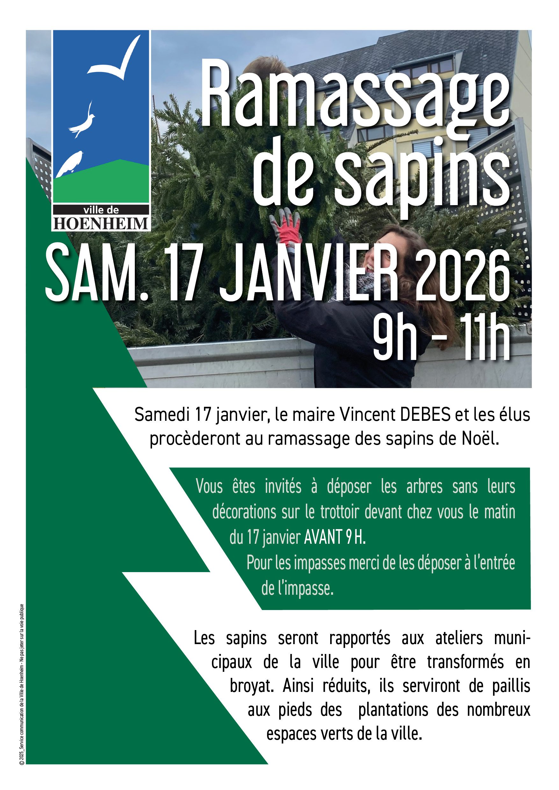

- Cet événement est terminé
Ramassage de sapins
17 janvier à 9 h 00 min - 12 h 00 min
Navigation de l'événement

Samedi 17 janvier à partir de 9h, le maire Vincent DEBES et les élus du conseil municipal procèderont à un ramassage des sapins de Noël.
A cette occasion, vous êtes invités à déposer les arbres dévêtus de leurs décorations sur le trottoir devant votre propriété le matin même, avant 9h. Si vous habitez dans une impasse, merci de les déposer à l’entrée de l’impasse.
Les sapins seront ramenés aux ateliers municipaux de la ville pour être transformés en broyat. Auparavant brûlés ou jetés avec les ordures ménagères, cette nouvelle démarche qui sera reconduite chaque année, est avant tout citoyenne et écologique. Les copeaux seront utilisés en paillis sur les espaces verts de la ville ou serviront à enrichir le compost.